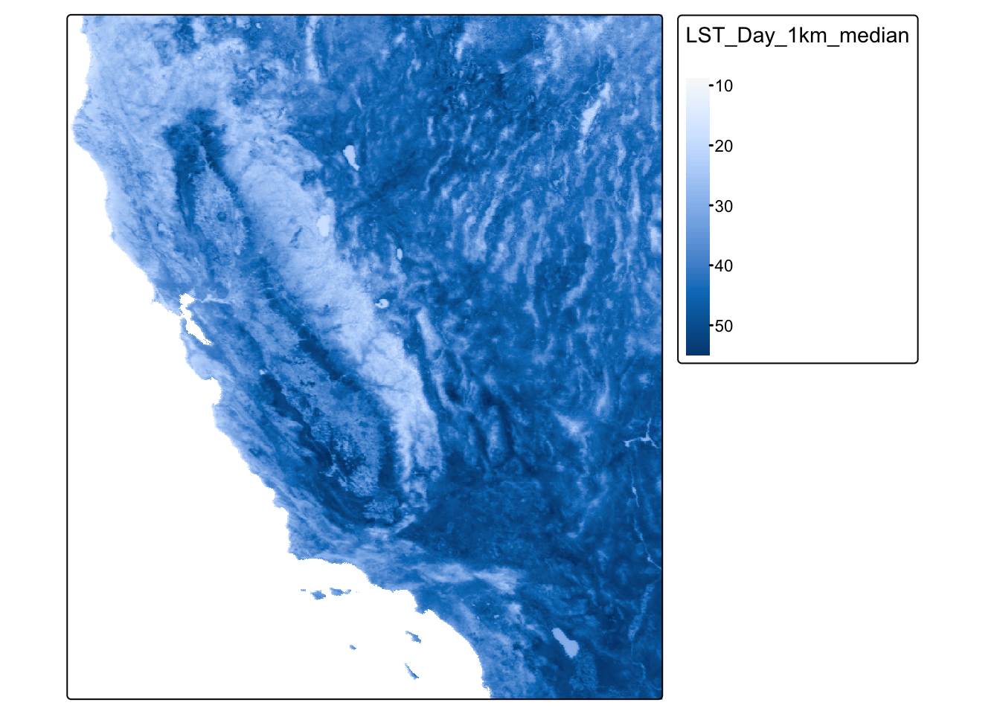
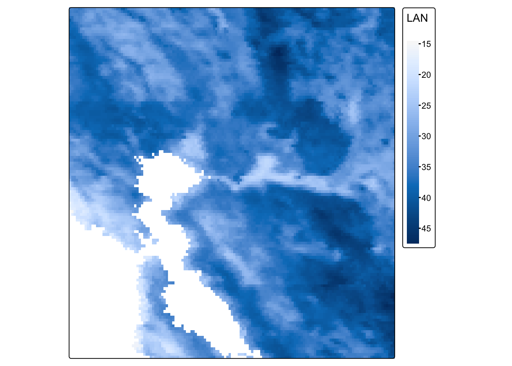
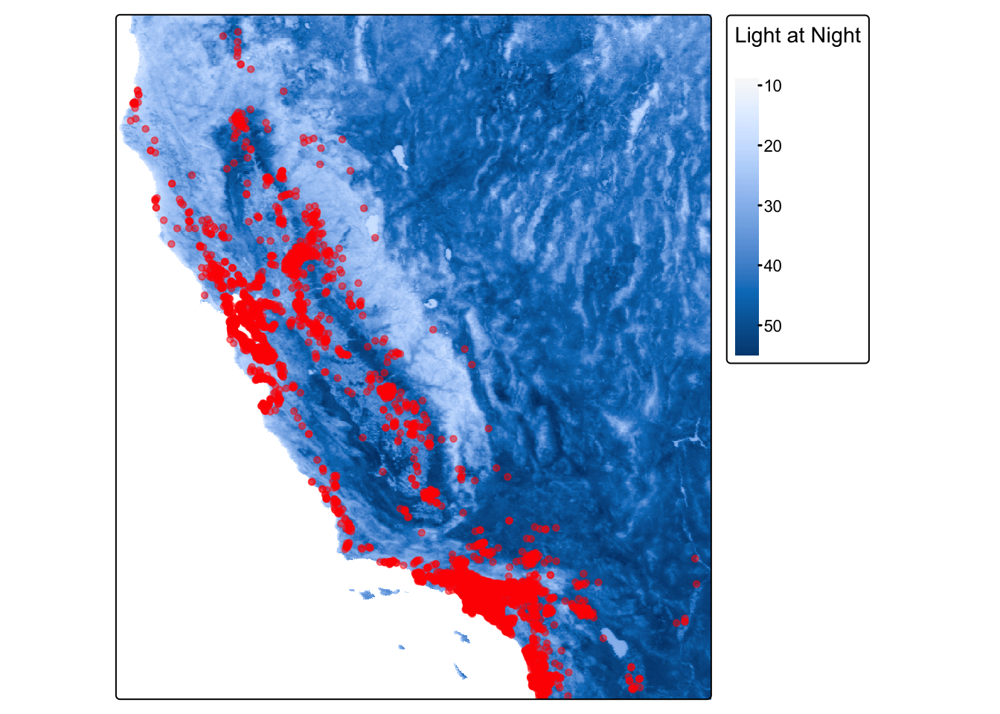

library(sf)
library(MapGAM)
library(tidyverse)
library(tidycensus)
library(flextable)
library(RColorBrewer)
library(tmap)
library(terra)## terra 1.8.29##
## Attaching package: 'terra'## The following objects are masked from 'package:flextable':
##
## align, colorize, rotate, width## The following object is masked from 'package:tidyr':
##
## extractWe’ll bring in the file NDVI_rast.tif. The file contains normalized
difference vegetation index (NDVI) data for the Bay Area. These data are
taken from Landsat satellite data that I downloaded from Google Earth
Engine. We use the function rast() to bring in data in
raster form, then take a look at the dataset.
url <- "https://github.com/pjames-ucdavis/SPH215/raw/main/LST_med_ca.tif"
download.file(url, destfile = "LST_med_ca.tif", mode = "wb")
LST_raster = rast("LST_med_ca.tif")
## Get summary of raster data
LST_raster## class : SpatRaster
## dimensions : 1056, 1153, 1 (nrow, ncol, nlyr)
## resolution : 0.008983153, 0.008983153 (x, y)
## extent : -124.4885, -114.131, 32.528, 42.01421 (xmin, xmax, ymin, ymax)
## coord. ref. : lon/lat WGS 84 (EPSG:4326)
## source : LST_med_ca.tif
## name : LST_Day_1km_median
Does it have a CRS?
## Check CRS
st_crs(LST_raster)## Coordinate Reference System:
## User input: WGS 84
## wkt:
## GEOGCRS["WGS 84",
## ENSEMBLE["World Geodetic System 1984 ensemble",
## MEMBER["World Geodetic System 1984 (Transit)"],
## MEMBER["World Geodetic System 1984 (G730)"],
## MEMBER["World Geodetic System 1984 (G873)"],
## MEMBER["World Geodetic System 1984 (G1150)"],
## MEMBER["World Geodetic System 1984 (G1674)"],
## MEMBER["World Geodetic System 1984 (G1762)"],
## MEMBER["World Geodetic System 1984 (G2139)"],
## MEMBER["World Geodetic System 1984 (G2296)"],
## ELLIPSOID["WGS 84",6378137,298.257223563,
## LENGTHUNIT["metre",1]],
## ENSEMBLEACCURACY[2.0]],
## PRIMEM["Greenwich",0,
## ANGLEUNIT["degree",0.0174532925199433]],
## CS[ellipsoidal,2],
## AXIS["geodetic latitude (Lat)",north,
## ORDER[1],
## ANGLEUNIT["degree",0.0174532925199433]],
## AXIS["geodetic longitude (Lon)",east,
## ORDER[2],
## ANGLEUNIT["degree",0.0174532925199433]],
## USAGE[
## SCOPE["Horizontal component of 3D system."],
## AREA["World."],
## BBOX[-90,-180,90,180]],
## ID["EPSG",4326]]
OK we have what looks like a raster. We see our resolution and our extent, and we have a CRS. Nice! Shall we plot this?
## Plot the raster on a map
tmap_mode("plot")## ℹ tmap mode set to "plot".LST_map = tm_shape(LST_raster) +
tm_raster(style = "cont") +
tm_legend(outside = TRUE)##
## ── tmap v3 code detected ────────────────────────────────────────────────────
## [v3->v4] `tm_raster()`: instead of `style = "cont"`, use col.scale =
## `tm_scale_continuous()`.LST_map## [v3->v4] `tm_legend()`: use 'tm_legend()' inside a layer function, e.g.
## 'tm_polygons(..., fill.legend = tm_legend())'
## This message is displayed once every 8 hours.
OK, let’s see if we can crop this to focus on San Francisco. I’ve
googled the lat and long for the area around San Francisco, and I’ll put
these right into my crop() function. I can use the
tmap_mode("view") now because the raster is small enough
for R to make interactive.
sf_rast<-crop(LST_raster, ext(-122.8, -121.5, 37.5, 38.6))
tmap_mode("plot")## ℹ tmap mode set to "plot".LAN_sf_map = tm_shape(sf_rast) +
tm_raster(title = "LAN",
style="cont",
) +
tm_legend(outside = TRUE)##
## ── tmap v3 code detected ────────────────────────────────────────────────────
## [v3->v4] `tm_raster()`: instead of `style = "cont"`, use col.scale =
## `tm_scale_continuous()`.[v3->v4] `tm_raster()`: migrate the argument(s) related to the legend of the
## visual variable `col` namely 'title' to 'col.legend = tm_legend(<HERE>)'LAN_sf_map
One last step. Let’s put all our knowledge together and map our old friend CAdata on top of the NDVI data in San Francisco. First, let’s bring in the CAdata dataset on ovarian cancer cases again.
data(CAdata)
ca_pts <- CAdata
ca_proj <- "+proj=lcc +lat_1=40 +lat_2=41.66666666666666
+lat_0=39.33333333333334 +lon_0=-122 +x_0=2000000
+y_0=500000.0000000002 +ellps=GRS80
+datum=NAD83 +units=m +no_defs"
ca_pts <- st_as_sf(CAdata, coords=c("X","Y"), crs=ca_proj)
Let’s check the CRS and compare it to our NDVI dataset.
st_crs(ca_pts)## Coordinate Reference System:
## User input: +proj=lcc +lat_1=40 +lat_2=41.66666666666666
## +lat_0=39.33333333333334 +lon_0=-122 +x_0=2000000
## +y_0=500000.0000000002 +ellps=GRS80
## +datum=NAD83 +units=m +no_defs
## wkt:
## PROJCRS["unknown",
## BASEGEOGCRS["unknown",
## DATUM["North American Datum 1983",
## ELLIPSOID["GRS 1980",6378137,298.257222101,
## LENGTHUNIT["metre",1]],
## ID["EPSG",6269]],
## PRIMEM["Greenwich",0,
## ANGLEUNIT["degree",0.0174532925199433],
## ID["EPSG",8901]]],
## CONVERSION["unknown",
## METHOD["Lambert Conic Conformal (2SP)",
## ID["EPSG",9802]],
## PARAMETER["Latitude of false origin",39.3333333333333,
## ANGLEUNIT["degree",0.0174532925199433],
## ID["EPSG",8821]],
## PARAMETER["Longitude of false origin",-122,
## ANGLEUNIT["degree",0.0174532925199433],
## ID["EPSG",8822]],
## PARAMETER["Latitude of 1st standard parallel",40,
## ANGLEUNIT["degree",0.0174532925199433],
## ID["EPSG",8823]],
## PARAMETER["Latitude of 2nd standard parallel",41.6666666666667,
## ANGLEUNIT["degree",0.0174532925199433],
## ID["EPSG",8824]],
## PARAMETER["Easting at false origin",2000000,
## LENGTHUNIT["metre",1],
## ID["EPSG",8826]],
## PARAMETER["Northing at false origin",500000,
## LENGTHUNIT["metre",1],
## ID["EPSG",8827]]],
## CS[Cartesian,2],
## AXIS["(E)",east,
## ORDER[1],
## LENGTHUNIT["metre",1,
## ID["EPSG",9001]]],
## AXIS["(N)",north,
## ORDER[2],
## LENGTHUNIT["metre",1,
## ID["EPSG",9001]]]]st_crs(LST_raster)## Coordinate Reference System:
## User input: WGS 84
## wkt:
## GEOGCRS["WGS 84",
## ENSEMBLE["World Geodetic System 1984 ensemble",
## MEMBER["World Geodetic System 1984 (Transit)"],
## MEMBER["World Geodetic System 1984 (G730)"],
## MEMBER["World Geodetic System 1984 (G873)"],
## MEMBER["World Geodetic System 1984 (G1150)"],
## MEMBER["World Geodetic System 1984 (G1674)"],
## MEMBER["World Geodetic System 1984 (G1762)"],
## MEMBER["World Geodetic System 1984 (G2139)"],
## MEMBER["World Geodetic System 1984 (G2296)"],
## ELLIPSOID["WGS 84",6378137,298.257223563,
## LENGTHUNIT["metre",1]],
## ENSEMBLEACCURACY[2.0]],
## PRIMEM["Greenwich",0,
## ANGLEUNIT["degree",0.0174532925199433]],
## CS[ellipsoidal,2],
## AXIS["geodetic latitude (Lat)",north,
## ORDER[1],
## ANGLEUNIT["degree",0.0174532925199433]],
## AXIS["geodetic longitude (Lon)",east,
## ORDER[2],
## ANGLEUNIT["degree",0.0174532925199433]],
## USAGE[
## SCOPE["Horizontal component of 3D system."],
## AREA["World."],
## BBOX[-90,-180,90,180]],
## ID["EPSG",4326]]
Hmmm, let’s make sure they are the same projection.
ca_pts_proj<-st_transform(ca_pts,st_crs(LST_raster))
st_crs(ca_pts_proj)## Coordinate Reference System:
## User input: WGS 84
## wkt:
## GEOGCRS["WGS 84",
## ENSEMBLE["World Geodetic System 1984 ensemble",
## MEMBER["World Geodetic System 1984 (Transit)"],
## MEMBER["World Geodetic System 1984 (G730)"],
## MEMBER["World Geodetic System 1984 (G873)"],
## MEMBER["World Geodetic System 1984 (G1150)"],
## MEMBER["World Geodetic System 1984 (G1674)"],
## MEMBER["World Geodetic System 1984 (G1762)"],
## MEMBER["World Geodetic System 1984 (G2139)"],
## MEMBER["World Geodetic System 1984 (G2296)"],
## ELLIPSOID["WGS 84",6378137,298.257223563,
## LENGTHUNIT["metre",1]],
## ENSEMBLEACCURACY[2.0]],
## PRIMEM["Greenwich",0,
## ANGLEUNIT["degree",0.0174532925199433]],
## CS[ellipsoidal,2],
## AXIS["geodetic latitude (Lat)",north,
## ORDER[1],
## ANGLEUNIT["degree",0.0174532925199433]],
## AXIS["geodetic longitude (Lon)",east,
## ORDER[2],
## ANGLEUNIT["degree",0.0174532925199433]],
## USAGE[
## SCOPE["Horizontal component of 3D system."],
## AREA["World."],
## BBOX[-90,-180,90,180]],
## ID["EPSG",4326]]OK should be good to go
tmap_mode("plot")## ℹ tmap mode set to "plot".LAN_cancer_map = tm_shape(LST_raster) +
tm_raster(style = "cont", title = "Light at Night") +
tm_legend(outside = TRUE) +
tm_shape(ca_pts_proj) +
tm_dots(size=0.3, alpha=0.5, col = "red")##
## ── tmap v3 code detected ────────────────────────────────────────────────────
## [v3->v4] `tm_raster()`: instead of `style = "cont"`, use col.scale =
## `tm_scale_continuous()`.[v3->v4] `tm_raster()`: migrate the argument(s) related to the legend of the
## visual variable `col` namely 'title' to 'col.legend = tm_legend(<HERE>)'[v3->v4] `tm_dots()`: use `fill_alpha` instead of `alpha`.LAN_cancer_map